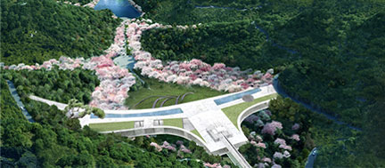
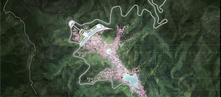
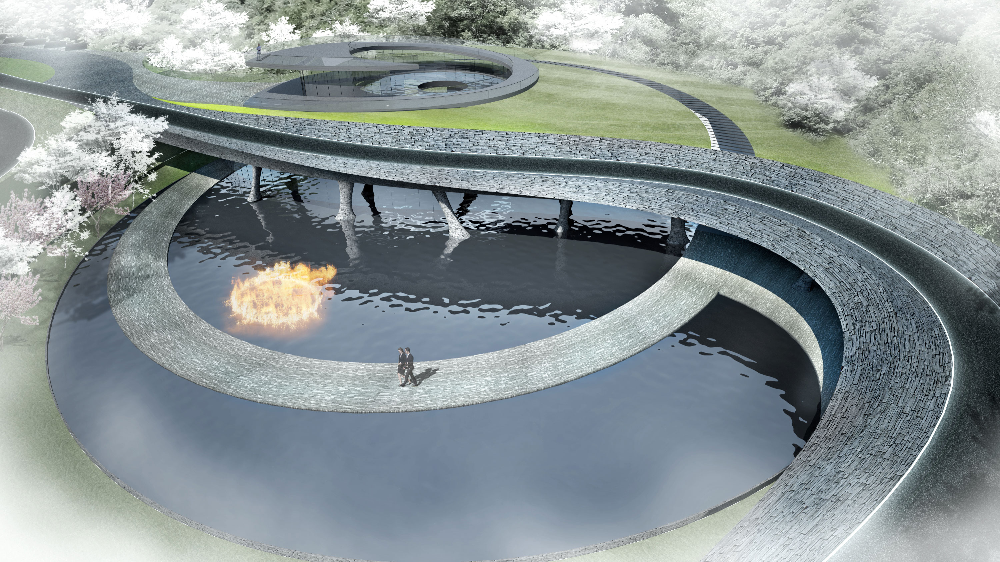
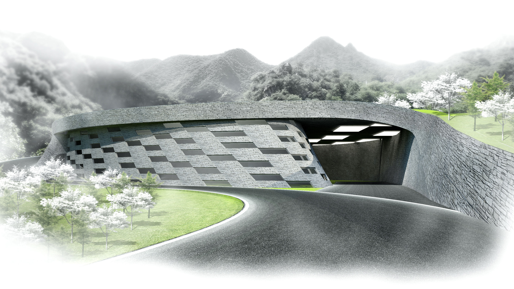

九公山核心区建筑群
九公山核心区建筑是整个九公山纪念林的点睛之笔，内部包含了祭祀，展览，销售，办公等多种功能，设计以“九公桥”为理念，整个建筑横跨三座山之间，如一座鬼斧神工的巨桥，将几座孤悬的山峰连成一体建筑最大跨度达117米，整体结构高度仅10米，修长有力的轮廓，如天地间一道银虹般穿山而出，卓然天成；在山下抬眼望去，简约壮美的体量、通透大气的幕墙以及精美的结构在这里相得益彰，为每一位来访者提供绝无仅有的视觉冲击感和观景感受，真个建筑创意新颖独特，克服了种种高难度技术挑战，体现了泰康立足百年，敢人为先的豪迈气魄和进取精神。

九公山水系景观
进入九公山纪念林的过程，是一段不断溯谷前行的历程，时而急峭，时而舒缓，最终到达山谷深处的九公祭堂。由九公祭堂缓步向下，有一序列的水系景点，提供心情转换的空间。
九公祭堂以拾级而上的阶梯与两侧幽静的松林植栽 , 造出其庄严肃穆的氛围。沿阶梯流水潺潺，草穗曳曳，令人忘忧。阶梯的东侧则是山涧的大小水面与巨石岩块交叠错落，与水阶梯的人工雕琢形成一实一虚的趣味感受。
山涧的汇流点有一棵千年古楸，犹如山林的守护神。山腰溪流汇集于古树下，形成一片静谧的大水面。镜月池楸，相映成趣。山谷中的枫树、梨花、水桃、松树等在此交错，四季成景；映入水中，形成连绵不绝的效果。
越过古楸池沿着水路蜿蜒而下是隐秘的时光花河，它时而急湍直下，时而缓流成池；时隐树间，时临廣陌。随着地形这花河幻化成一片五花海，跌水层层五彩斑斓；清明时的山杏，夏暑时的萱草，重阳时的秋色与冬雪时的静肃，照在湛蓝池水美不胜收。时光花河最终汇集而成一片优美宁静的思亲镜湖，也让访客有个最终的心灵沉淀与冥思的空间去处。


碧水门
相传生死以奈河相隔。水，是中国文化中生离死别的重要象征。水，是生与死的转换之门。
九公山纪念林的大门不是一个单纯的门户意象。它是由进出的道路的排列形式，山体与山沟之间的空间转换，与中国传统文化的哲学观的一个整体性融合。
进入九公山纪念林将先由一个柏树林围绕的九龙柱阵列开始，龙之九子的雕刻点睛式地告知访客此地是九公山。而后入山的道路越发蜿蜒起伏，寓意从生到死的人生磨难和曲折。
道路的尽端是一个半嵌于山体中的一个建筑。道路在此以一个大幅度的转弯跨越过下方的水体，象征着跨越阴阳国度。水中间有一团生生不息之火眼，过水门的道路爬上建筑顶部，则是一汪源源不断之水眼。两者寓意阴阳两面；生是死的开始，死是生的轮回。此处的空间形成犹如太极八卦所昭示宇宙哲学之图形回程则是另一条单向通道。进与出是两条独立的通道，预示着生死相邻不相通。 贴着山壁的隧道先带来黑暗，再迎向光明，如同对涅槃重生的向往。
九龙柱
柏树林围绕着九龙柱阵列，龙之九子的雕刻点睛式地告知访客此地是九公山，而后入山的道路越发蜿蜒起伏，寓意从生到死的轮回曲折。